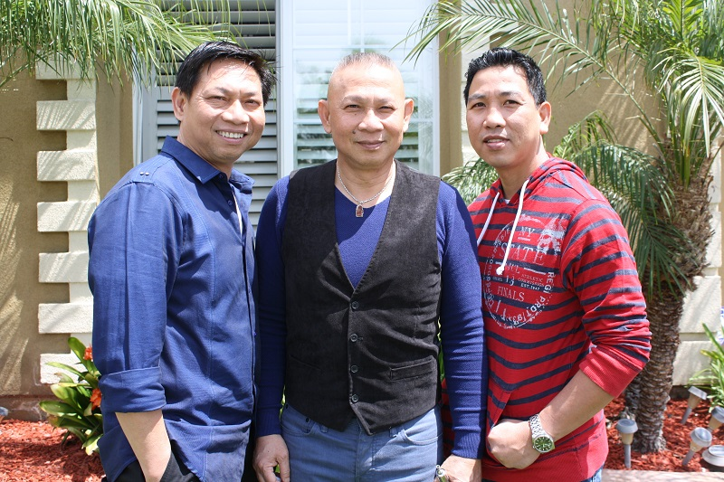

About Us

When we started this company out of our garage in 2001, we had a simple goal: to provide customers with the best service, highest-quality production, and fastest turnover rate. Over the last decade and a half, clients have seen this goal reached time after time again, as we expanded our company from that small garage to a full manufacturing complex with over 15 different state-of-the-art CNC machines. With over 30 years of experience in the industry, our team of highly trained engineers and experts in the precision-machining field not only accommodate to your exact specifications, but also boast some of the best turnover rates in the business. Whether you need help in building prototypes, designing the next big thing, or just high-quality general machining, give us a call and we promise you won’t be disappointed.
- Phuc Truong, Hung Truong, and Vu Nguyen
Overnight Policy
We operate under a strict overnight policy here at TTN Machining; if you bring something in or send us a solid model at night, we will have it ready for you to go that next morning. We pride ourselves on our efficiency and capability to meet exactly the customer’s needs just as they are and on time. It’s just that simple.